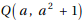
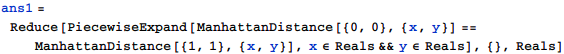
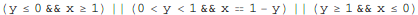
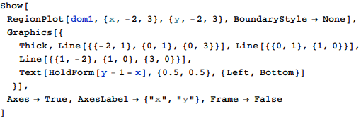
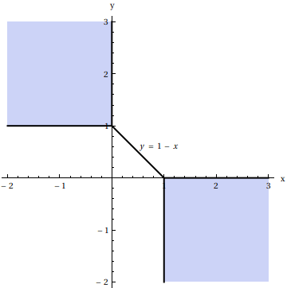
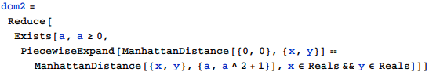
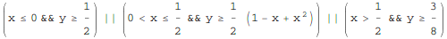
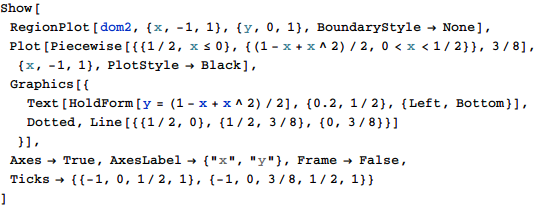
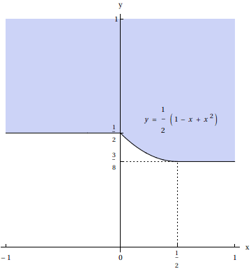

東京大学 1994年 理科 第6問
問題
x y平面上の2点P,Qに対し、PとQをx軸またはy軸に平行な線分からなる折れ線で結ぶときの経路の長さの最小値をd(P,Q)で表す。
(1) 原点O(0,0)と点A(1,1)に対し、d(O,P)=d(P,A)を満たす点P(x,y)の範囲をx y平面上に図示せよ。
(2) 実数a≥0に対し、点を考える。
次の条件(*)を満足する点P(x,y)の範囲をx y平面上に図示せよ。
(*) 原点O(0,0)に対し、d(O,P)=d(P,Q)となるようなa≥0が存在する。
解答
(1)
d(P,Q)はPとQのマンハッタン距離であるから、


これを図示すると下図の塗りつぶし部および太線部。


(2)
(*)より


図示すると下図(境界線を含む)。


補足・感想
MathematicaはAbsを「簡約化された形」としているので、そのままではAbsを含んだままの解を返してくる。
この問題で適した形にするにはPiecewiseExpandを使って展開する必要がある。